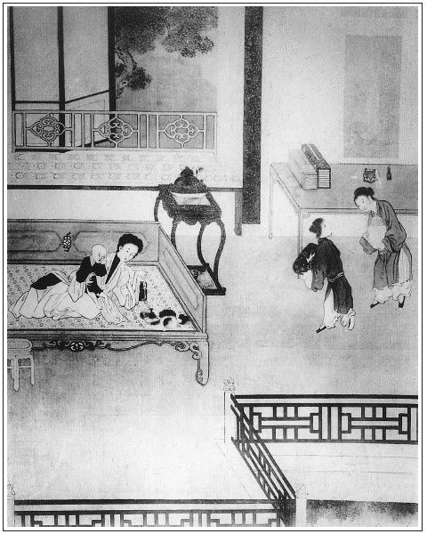

張回提刑所，朝廷設此以平天下之不平，所以重民命也。看他朝廷以之為人事送太師，太師又以之為人事，送百千奔走之市井小人，而百千市井小人之中，有一市井小人之西門慶，實太師特以一提刑送之者也。今看到任以來，未行一事，先以伯爵一幫閒之情、道國一夥計之分，將直作曲，妄入人罪，後即於我所欲入之人，又因一龍陽之情，混入內室之面，隨出人罪，是西門慶又以所提之刑為幫閒、淫婦、幸童之人事，天下事至此尚忍言哉？作者提筆著此回時，必放聲大哭也。
瓶兒，金屋之阿嬌也。書僮，外庭之小奴也。竟入內室，絕不避嫌，飲酒說事，絕不明察。況瓶兒，妾也。妾有事不直致之於夫，而托外庭奴僕為之先容，其可疑處正不不在求情說分上處。乃一味糊塗，豈齊家之正道？宜乎雪娥私來旺，知而留之，金蓮私琴童，迷而不悟，以致養成敬濟之大患，至死而不覺也。
欲寫金、瓶二人爭寵處，於何處下筆？乃因書僮，即插入平安，令其男寵中先有共相油鹽醬醋之香，串入金蓮，遂覺一時情景如畫。
寫瓶兒一邊熱處，自覺金蓮二邊冰冷，不必身親其地，而已見有難堪之情，作者之筆真化工也。
詞曰：
成吳越，怎禁他巧言相鬥諜。平白地送暖偷寒，平白地送暖偷寒，猛可的搬唇弄舌。水晶丸不住撇，蘸剛鍬一味撅。
──右調《川拔棹》

話說韓道國走到家門首打聽，見渾家和兄弟韓二拴在鋪中去了，急急走到鋪子內，和來保計議。張夾二人相合，只暗暗描寫。來保說：「你還早央應二叔來，對當家的說了，拿個帖兒對縣中李老爹一說，不論多大事情都了了。」這韓道國竟到應怕爵家。他娘子兒使丫頭出來回：「沒人在家，不知往那裡去了。只怕在西門大老爹家。」張旁妙絕。韓道國道：「沒在他宅裡。」問應寶，也跟出去了。韓道國慌了，往勾欄院裡抓尋。原來伯爵被湖州何蠻子的兄弟何二蠻子──號叫何兩峰，請在四條巷內何金蟬兒家吃酒。被韓道國抓著了，請出來。伯爵吃的臉紅紅的，張旁飲。帽簷上插著剔牙杖兒。張旁饌。韓道國唱了喏，拉到僻靜處，如此這般告他說。伯爵道：「既有此事，我少不得陪你去。」於是辭了何兩峰，與道國先同到家，問了端的。道國央及道：「此事明日只怕要解到縣裡去，只望二叔往大官府宅裡說說，討個帖兒，轉與李老爹，求他只不教你侄婦見官。事畢重謝二叔。」說著跪在地下。伯爵用手拉起來，說道：「賢契，這些事兒，我不替你處？你快寫個說帖，把一切閒話都丟開，只說你常不在家，被街坊這伙光棍時常打磚掠瓦，欺負娘子。你兄弟韓二氣忿不過，和他嚷亂，反被這夥人群住，揪采踢打，同拴在鋪裡。望大官府發個帖兒，對李老爹說，只不教你令正出官，管情見個分上就是了。」那韓道國取筆硯，連忙寫了說帖，安放袖中。
伯爵領他逕到西門慶門首，問守門的平安兒：「爹在家？」平安道：「爹在花園書房裡。二爹和韓大叔請進去。」那應伯爵狗也不咬，走熟了的，同韓道國進入儀門，轉過大廳，由鹿頂鑽山進去，就是花園角門。張旁閒中又將花園一描。抹過木香棚，三間小卷棚，名喚翡翠軒，乃西門慶夏月納涼之所。前後簾攏掩映，四面花竹陰森，張夾可惜主人俗。裡面一明兩暗書房。有畫童兒小廝在那裡掃地，說：「應二爹和韓大叔來了！」二人掀開簾子。進入明間內，書僮看見便道：「請坐。俺爹剛才進後邊去了。」張旁映書僮，明眼人自知。一面使畫童兒請去。張旁映書僮。畫童兒走到後邊金蓮房內，問：「春梅姐，爹在這裡？」春梅罵道：「賊見鬼小奴才兒！爹在間壁六娘房裡不是，巴巴的跑來這裡問！」張夾妒口醋語。畫童便走過這邊，只見繡春在石台基上坐的，悄悄問：「爹在房裡？應二爹和韓大叔來了，在書房裡等爹說話。」繡春道：「爹在房裡，看著娘與哥裁衣服哩。」原來西門慶拿出口疋尺頭來，一疋大紅紵絲，一疋鸚哥綠潞綢，教李瓶兒替官哥裁毛衫、披襖、背心、護頂之類。在炕上正鋪著大紅氈條。奶子抱著哥兒，迎春執著熨斗。張旁總為內室一描也。只見繡春進來，悄悄拉迎春一把，迎春道：「你拉我怎麼的？拉撇了這火落在氈條上。」繡眉小丫頭情致爾爾。李瓶兒便問：「你平白拉他怎的？」繡春道：「畫童說應二爹來了，請爹說話。」李瓶兒道：「小奴才兒，應二爹來，你進來說就是了，巴巴的扯他！」張夾房中情事如畫，卻偏於忙中弄此閒筆。
西門慶吩咐畫童：「請二爹坐坐，我就來。」於是看裁完了衣服，便衣出來，書房內見伯爵二人，作揖坐下，韓道國打橫。吃了茶，伯爵就開言說道：「韓大哥，你有甚話，對你大官府說。」西門慶道：「你有甚話說來。」韓道國才待說「街坊有伙不知姓名棍徒……」，被應伯爵攔住張旁又不教說，妙絕。便道：「賢侄，你不是這等說了。噙著骨禿露著肉，也不是事。對著你家大官府在這裡，越發打開後門說了罷：繡眉筋筋節節，當行法家，豈特清客而己。韓大哥常在鋪子裡上宿，家下沒人，止是他娘子兒一人，還有個孩兒。左右街坊，有幾個不三不四的人，見無人在家，時常打磚掠瓦鬼混。欺負的急了，他令弟韓二哥看不過，來家罵了幾句，被這起光棍不由分說，群住了打個臭死。如今都拴在鋪裡，明早要解了往本縣李大人那裡去。他哭哭啼啼，央煩我來對哥說，討個帖兒，對李大人說說，青目一二。有了他令弟也是一般，只不要他令正出官就是了。」因說：「你把那說帖兒拿出來與你大官人瞧，好差人替你去。」張旁情事如畫。韓道國便向袖中取出，連忙雙膝跪下，說道：「小人忝在老爹門下，萬乞老爹看應二叔分上，俯就一二，舉家沒齒難忘。」西門慶一把手拉起，說道：「你請起來。」於是觀看帖兒，上面寫著：「犯婦王氏，乞青目免提。」西門慶道：「這帖子不是這等寫了！只有你令弟韓二一人就是了。」向伯爵道：「比時我拿帖對縣裡說，不如只吩咐地方改了報單，明日帶來我衙門裡來發落就是了。」繡眉有權有勢，想起來官真要做。伯爵教：「韓大哥，你還與恩老爹下個禮兒。這等亦發好了！」那韓道國又倒身磕頭下去。西門慶教玳安：「你外邊快叫個答應的班頭來。」不一時，叫了個穿青衣的節級來，在旁邊伺候。西門慶叫近前，吩咐：「你去牛皮街韓夥計住處，問是那牌那鋪地方，對那保甲說，就稱是我的鈞語，分咐把王氏即時與我放了。查出那幾個光棍名字來，改了報帖，明日早解提刑院，我衙門裡聽審。」張夾要提刑官乃只為如此勾當用得著。那節級應諾，領了言語出門。伯爵道：「韓大哥，你即一同跟了他，幹你的事去罷，我還和大官人說話哩。」那韓道國千恩萬謝出門，與節級同往牛皮街幹事去了。
西門慶陪伯爵在翡翠軒坐下，因令玳安放桌兒：「你去對你大娘說，昨日磚廠劉公公送的木樨荷花酒，打開篩了來，我和應二叔吃，就把糟鰣魚蒸了來。」伯爵舉手道：「我還沒謝的哥，昨日蒙哥送了那兩尾好鯽魚與我。送了一尾與家兄去，張旁補問情，映出新夏，文情細甚。後「寄書」「包占」諸事皆出也。剩下一尾，對房下說，拿刀兒劈開，送了一段與小女，餘者打成窄窄的塊兒，拿他原舊紅糟兒培著，再攪些香油，安放在一個磁罐內，留著我一早一晚吃飯兒，或遇有個人客兒來，蒸恁一碟兒上去，也不枉辜負了哥的盛情。」西門慶告訴：「劉太監的兄弟劉百戶，因在河下管蘆葦場，賺了幾兩銀子，新買了一所莊子在五里店，拿皇木蓋房，近日被我衙門裡辦事官緝聽著，首了。依著夏龍溪，饒受他一百兩銀子，還要動本參送，申行省院。劉太監慌了，親自拿著一百兩銀子到我這裡，再三央及，只要事了。不瞞你說，咱家做著些薄生意，料也過了日子，那裡希罕他這樣錢！況劉太監平日與我相交，時常受他些禮，今日因這些事情，就又薄了面皮？繡眉此一段今日任途所難，勿以西門慶而薄之。教我絲毫沒受他的，只教他將房屋連夜拆了。到衙門裡，只打了他家人劉三二十，就發落開了。事畢，劉太監感情不過，宰了一口豬，送我一壇自造荷花酒，兩包糟鰣魚，重四十斤，又兩疋妝花織金緞子，親自來謝。彼此有光，見個情分。」張夾提刑官好作用。伯爵道：「哥，你是希罕這個錢的？夏大人他出身行伍，起根立地上沒有，他不撾些兒，拿甚過日？哥，你自從到任以來，也和他問了幾樁事兒？」西門慶道：「大小也問了幾件公事。別的到也罷了，只吃了他貪濫蹋婪，有事不論青紅皂白，得了錢在手裡就放了，繡眉仕途皆然，不足深怪。成甚麼道理！我便再三扭著不肯，『你我雖是個武職官兒，掌著這刑條，還放些體面才好。』」說未了，酒菜齊至。西門慶將小金菊花杯斟荷花酒，陪伯爵吃。
不說兩個說話兒，坐更餘方散。張夾偏又插此閒文。且說那夥人，見青衣節級下地方，把婦人王氏放回家去，又拘總甲，查了各人名字，明早解提刑院問理，都各人面面相覷。繡眉天下事計料停貼而變出意外，大抵此類。就知韓道國是西門慶傢伙計，尋的本家擽子，只落下韓二一人在鋪裡。都說這事弄的不好了。這韓道國又送了節級五錢銀子，登時間保甲查寫那幾個名字，送到西門慶宅內，單等次日早解。
過一日，西門慶與夏提刑兩位官，到衙門裡坐廳。該地方保甲帶上人去，頭一起就是韓二，跪在頭裡。張旁妙。夏提刑先看報單：「牛皮街一牌四鋪總甲蕭成，為地方喧鬧事……」張旁妙，便賴。第一個就叫韓二，第二個車淡，第三個管世寬，第四個游守，第三個郝賢。都叫過花名去。然後問韓二：「為什麼起來？」那韓二先告道：「小的哥是買賣人，張夾開口好妙。常不在家住的，小男幼女，被街坊這幾個光棍，要便彈打胡博詞兒，坐在門首，胡歌野調，夜晚打磚，百般欺負。小的在外另住，來哥家看視，含忍不過，罵了幾句。被這伙棍徒，不由分說，揪倒在地，亂行踢打，獲在老爺案下。望老爺查情。」夏提刑便問：「你怎麼說？」那夥人一齊告道：「老爺休信他巧對！他是耍錢的搗鬼。他哥不在家，和他嫂子王氏有奸。王氏平日倚逞刁潑毀罵街坊。昨日被小的們捉住，見有底衣為證。」夏提刑因問保甲蕭成：「那王氏怎的不見？」蕭成怎的好回節級放了？只說：「王氏腳小，路上走不動，便來。」那韓二在下邊，兩隻眼只看著西門慶。良久，張旁二字，妙絕情事。西門慶欠身望夏提刑道：「長官也不消要這王氏。想必王氏有些姿色，這光棍來調戲他不遂，捏成這個圈套。」繡眉好貌。因叫那為首的車淡上去，問道：「你在那裡捉住那韓二來？」張旁妙問。眾人道：「昨日在他屋裡捉來。」又問韓二：「王氏是你甚麼人？」張旁妙問。保甲道：「是他嫂子兒。」又問保甲：「這夥人打那裡進他屋裡？」保甲道：「越牆進去。」西門慶大怒，罵道：「我把你這起光棍！他既是小叔，王氏也是有服之親，莫不不許上門行走？像你這起光棍，你是他什麼人，如何敢越牆進去？張夾卻亦有理，強詞可畏。況他家男子不在，又有幼女在房中，非奸即盜了。」繡眉以此折獄，正理確然，然而失情者亦不少矣。張旁官府如何知得恁切？張夾百忙中點愛姐。喝令左右拿夾棍來，每人一夾、二十大棍，打的皮開肉綻，鮮血迸流。況四五個都是少年子弟，出娘胞胎未經刑杖，一個個打的號哭動天，呻吟滿地。這西門慶也不等夏提刑開口，吩咐：「韓二出去聽候。把四個都與我收監，不日取供送問。」四人到監中都互相抱怨，個個都懷鬼胎。監中人都嚇恐他：「你四個若送問，都是徒罪。到了外府州縣，皆是死數。」這些人慌了，等的家下人來送飯，捎信出去，教各人父兄使錢，上下尋人情。內中有拿人情央及夏提刑，夏提刑說：「這王氏的丈夫是你西門老爹門下的夥計。他在中間扭著要送問，同僚上，我又不好處得。你須還尋人情和他說去。」也有央吳大舅出來說的。張旁帶一筆，妙絕。人都知西門慶家有錢，不敢來打點。
四家父兄都慌了，會在一處。內中一個說道：「也不消再央吳千戶，他也不依。張旁不依情，只在這邊口若懸河說出，妙妙。我聞得人說，東街上住的開綢絹鋪應大哥兄弟應二，和他契厚。咱不如湊了幾十兩銀子，封與應二，教他替咱們說說，管情極好。」於是車淡的父親開酒店的車老兒為首，每人拿十兩銀子來，共湊了四十兩銀子，齊到應伯爵家，央他對西門慶說。張旁好情，色也；捉姦，氣也；使銀子，財也。故加一開酒店，便使四字皆現，真妙絕掩映之筆。伯爵收下，打發眾人去了。他娘子兒便說：「你既替韓夥計出力，擺佈這起人，如何又攬下這銀子，反替他說方便，不惹韓夥計怪？」伯爵道：「我可知不好說的。我別自有處。」因把銀子兌了十五兩，包放袖中，早到西門慶家。西門慶還未回來。伯爵進廳上，只見書僮正從西廂房書房內出來，頭帶瓦楞帽兒，撇著金頭蓮瓣簪子，身上穿著蘇州絹直掇，玉色紗𧜽兒，涼鞋淨襪。張旁為書僮出色一描。說道：「二爹請客位內坐。」交畫童兒後邊拿茶去，說道：「小廝，我使你拿茶與應二爹，你不動，且耍子兒。等爹來家，看我說不說！」張夾得寵口角，如畫。那小廝就拿茶去了。伯爵便問：「你爹衙門裡還沒來家？」書僮道：「剛才答應的來，說爹衙門散了，和夏老爹門外拜客去了。二爹有甚話說？」伯爵道：「沒甚話。」書僮道：「二爹前日說的韓夥計那事，爹昨日到衙門裡，把那夥人都打了收監，明日做文書還要送問他。」伯爵拉他到僻靜處，和他說：「如今又一件，那夥人家屬如此這般，聽見要送問，都害怕了。昨日晚夕，到我家哭哭啼啼，再三跪著央及我，教對你爹說。我想我已是替韓夥計說在先，怎又好管他的，惹的韓夥計不怪？沒奈何，教他四家處了這十五兩銀子，看你取巧對你爹說，看怎麼將就饒他放了罷。」因向袖中取出銀子來遞與書僮。書僮打開看了，大小四錠零四塊。說道：「既是應二爹分上，交他再拿五兩來，待小的替他說，還不知爹肯不肯。昨日吳大舅親自來和爹說了，爹不依。張旁補出。小的虼蚤臉兒──好大面皮！實對二爹說，小的這銀子，不獨自一個使，還破些鈔兒，轉達知俺生哥的六娘，繞個彎兒替他說，才了他此事。」繡眉伶俐。伯爵道：「既如此，等我和他說。你好歹替他上心些，他後晌些來討回話。」書僮道：「爹不知多早來家，你教他明日早來罷。」說畢，伯爵去了。
這書僮把銀子拿到鋪子，𨮸下一兩五錢來，教人買了一壇金華酒，兩隻燒鴨，兩隻雞，一錢銀子鮮魚，一肘蹄子，二錢頂皮酥果餡餅兒，一錢銀子的搽穰卷兒，送到來興兒屋裡，央及他媳婦惠秀替他整理，安排端正。那一日，潘金蓮不在家，從早間就坐轎子往門外潘姥姥家做生日去了。張夾金蓮出門，妙。書僮使畫童兒用方盒把下飯先拿在李瓶兒房中，然後又提了一壇金華酒進去。李瓶兒便問：「是那裡的？」畫童道：「是書僮哥送來孝順娘的。」李瓶兒笑道：「賊囚！他怎的孝順我？」良久，書僮兒進來，見瓶兒在描金炕床上，引著玳瑁貓兒和哥兒耍子。張旁早為雪娥一影。因說道：「賊囚！你送了這些東西來與誰吃，」那書僮只是笑。張旁無禮之甚。李瓶兒道：「你不言語，笑是怎的說？」書僮道：「小的不孝順娘，再孝順誰！」繡眉伶俐人一二語，便見其措辭之妙。張旁無禮之甚。李瓶兒道：「賊囚！你平白好好的，怎麼孝順我？你不說明白，我也不吃。」那書僮把酒打開，菜蔬都擺在小桌上，教迎春取了把銀素篩了來，傾酒在鍾內，雙手遞上去，跪下說道：「娘吃過，等小的對娘說。」李瓶兒道：「你有甚事，說了我才吃。不說，你就跪一百年，我也是不吃。」又道：「你起來說。」那書僮於是把應伯爵所央四人之事，從頭訴說一遍：「他先替韓夥計說了，不好來說得，央及小的先來稟過娘。等爹問，休說是小的說，只假做花大舅那頭使人來說。張旁曲曲折折人情，可歎。小的寫下個帖兒在前邊書房內，只說是娘遞與小的，教與爹看。娘再加一美言。況昨日衙門裡爹已是打過他，爹胡亂做個處斷，放了他罷，也是老大的陰騭。」李瓶兒笑道：「原來也是這個事！不打緊，等你爹來家，我和他說就是了。你平白整治這些東西來做什麼？」又道：「賊囚！你想必問他起發些東西了，」書僮道：「不瞞娘說，他送了小的五兩銀子。」李瓶兒道：「賊囚！你倒且是會排鋪賺錢！」於是不吃小鐘，旋教迎春取了個大銀衢花杯來，先吃了兩鐘，然後也回斟一杯與書僮吃。張旁無禮之甚。書僮道：「小的不敢吃，吃了快臉紅，只怕爹來看見。」李瓶兒道：「我賞你吃，怕怎的！」於是磕了頭起來，一吸而飲之。李瓶兒把各樣嗄飯揀在一個碟兒裡，教他吃。那小廝一連陪他吃了兩大杯，張旁無禮之甚。怕臉紅就不敢吃，就出來了。到了前邊鋪子裡，還剩了一半點心嗄飯，擺在櫃上，又打了兩提罈酒，請了傅夥計、賁四、陳敬濟、來興兒、玳安兒。眾人都一陣風捲殘雲，吃了個淨光。就忘了教平安兒吃。
那平安兒坐在大門首，把嘴谷都著。不想西門慶約後晌從門外拜了客來家，平安看見也不說。那書僮聽見喝道之聲，慌的收拾不迭，兩三步扠到廳上，與西門慶接衣服。西門慶便問：「今日沒人來？」書僮道：「沒人。」西門慶脫了衣服，摘去冠帽，帶上巾幘，走到書房內坐下。書僮兒取了一盞茶來遞上，西門慶呷了一口放下。因見他面帶紅色，便問：「你那裡吃酒來？」這書僮就向桌上硯台下張夾如畫。取出一紙柬帖與西門慶瞧，說道：「此是後邊六娘叫小的到房裡，與小的的，說是花大舅那裡送來，說車淡等事。六娘教小的收著與爹瞧。因賞了小的一盞酒吃，不想臉就紅了。」西門慶把帖觀看，上寫道：「犯人車淡四名，乞青目。」看了，遞與書僮，吩咐：「放在我書篋內，教答應的明日衙門裡稟我。」書僮一面接了放在書篋內，又走在旁邊侍立。西門慶見他吃了酒，臉上透出紅白來，紅馥馥唇兒，露著一口糯米牙兒，如何不愛。於是淫心輒起，摟在懷裡，兩個親嘴咂舌頭。那小郎口噙香茶桂花餅，身上薰的噴鼻香。西門慶用手撩起他衣服，褪了花褲兒，摸弄他屁股。因囑咐他：「少要吃酒，只怕糟了臉。」書僮道：「爹吩咐，小的知道。」兩個在屋裡正做一處。忽一個青衣人，騎了一疋馬，走到大門首，跳下馬來，向守門的平安作揖，問道：「這裡是問刑的西門慶老爹家？」那平安兒因書僮不請他吃東道，把嘴頭子撅著，正沒好氣，半日不答應。那人只顧立著，說道：「我是帥府周老爺差來，送轉帖與西門老爹看。明日與新平寨坐營須老爹送行，在永福寺擺酒。也有荊都監老爹，掌刑夏老爹，營裡張老爹，每位分資一兩。逕來報知，累門上哥稟稟進去，小人還等回話。」那平安方拿了他的轉帖入後邊，打聽西門慶在花園書房內，走到裡面，轉過松牆，只見畫童兒在窗外台基上坐的，見了平安擺手兒。那平安就知西門慶與書僮幹那不急的事，悄悄走在窗下聽覷。半日，聽見裡邊氣呼呼，跐的地平一片聲響。西門慶叫道：「我的兒，把身子調正著，休要動。」就半日沒聽見動靜。繡眉個中光景，妙在隱顯之間。只見書僮出來，與西門慶舀水洗手，看見平安兒、畫童兒在窗子下站立，把臉飛紅了，往後邊拿去了。平安拿轉帖進去，西門慶看了，取筆畫了知，吩咐：「後邊問你二娘討一兩銀子，教你姐夫封了，付與他去。」平安兒應諾去了。
書僮拿了水來，西門慶洗畢手，回到李瓶兒房中。李瓶兒便問：「你吃酒？教丫頭篩酒你吃。」西門慶看見桌子底下放著一壇金華酒，便問：「是那裡的？」李瓶兒不好說是書僮兒買進來的，只說：「我一時要想些酒兒吃，旋使小廝街上買了這罈酒來。打開只吃了兩鍾兒，就懶待吃了。」西門慶道：「阿呀，前頭放著酒，你又拿銀子買！前日我賒了丁蠻子四十壇河清酒，丟在西廂房內。你要吃時，教小廝拿鑰匙取去。」李瓶兒還有頭裡吃的一碟燒鴨子、一碟雞肉、一碟鮮魚沒動，教迎春安排了四碟小菜，切了一碟火薰肉，放下桌兒，在房中陪西門慶吃酒。西門慶更不問這嗄飯是那裡，可見平日家中受用，這樣東西無日不吃。張旁閒中一描。西門慶飲酒中間想起，問李瓶兒：「頭裡書僮拿的那帖兒是你與他的？」李瓶兒道：「是門外花大舅那裡來說，教你饒了那夥人罷。」西門慶道：「前日吳大舅來說，我沒依。若不是，我定要送問這起光棍。既是他那裡分上，我明日到衙門裡，每人打他一頓放了罷。」李瓶兒道：「又打他怎的？打的那雌牙露嘴。甚麼模樣！」西門慶道：「衙門是這等衙門，我管他雌牙不雌牙。還有比他嬌貴的。」李瓶兒道：「我的哥哥，你做這刑名官，早晚公門中與人行些方便兒，也是你個陰騭，別的不打緊，只積你這點孩兒罷。」西門慶道：「可說什麼哩！」李瓶兒道：「你到明日，也要少拶打人，得將就將就些兒，那裡不是積福處。」西門慶道：「公事可惜不的情兒。」
兩個正飲酒中間，只見春梅掀簾子進來。見西門慶正和李瓶兒腿壓著腿兒吃酒，說道：「你每自在吃的好酒兒！這咱晚就不想使個小廝接接娘去？只有來安兒一個跟著轎子，隔門隔戶，只怕來晚了，你倒放心！」繡眉試看春梅神情意致，口角間露一種驕心傲骨，後來結果已見一斑。然得之薰陶者亦不淺。西門慶見他花冠不整，雲鬢蓬鬆，便滿臉堆笑道：「小油嘴兒，我猜你睡來。」李瓶兒道：「你頭上挑線汗巾兒跳上去了，還不往下拉拉！」因讓他：「好甜金華酒，你吃鍾兒。」西門慶道：「你吃，我使小廝接你娘去。」那春梅一手按著桌兒且兜鞋，張旁不理，妙甚。因說道：「我才睡起來，心裡惡拉拉，懶待吃。」西門慶道：「你看不出來，小油嘴吃好少酒兒！」李瓶兒道：「左右今日你娘不在，你吃上一鍾兒怕怎的？」張旁呆甚。春梅道：「六娘，你老人家自飲，我心裡本不待吃，俺娘在家不在家便怎的？張旁純是搶瓶兒語。就是娘在家，遇著我心不耐煩，他讓我，我也不吃。」西門慶道：「你不吃，喝口茶兒罷。我使迎春前頭叫個小廝，接你娘去。」因把手中吃的那盞木樨芝麻薰筍泡茶遞與他。那春梅似有如無，接在手裡，只呷了一口，就放下了。張夾一路寫其不得意處。說道：「你不要教迎春叫去。我已叫了平安兒在這裡，他還大些。」西門慶隔窗就叫平安兒。那小廝應道：「小的在這裡伺候。」西門慶道：「你去了，誰看大門？」平安道：「小的委付棋童兒在門上。」西門慶道：「既如此，你快拿個燈籠接去罷。」平安兒於是逕拿了燈籠來迎接潘金蓮。迎到半路，只見來安兒跟著轎子從南來了。原來兩個是熟抬轎的，一個叫張川兒，一個叫魏聰兒。走向前一把手拉住轎扛子，說道：「小的來接娘來了。」金蓮就叫平安兒問道：「是你爹使你來接我？誰使你來？」張旁必問，如畫。平安道：「是爹使我來倒少！是姐使了小的接娘來了。」金蓮道：「你爹想必衙門裡沒來家。」繡眉隨處關心，是妒處，亦是愛處。吾怒之，吾尤喜。平安道：「沒來家？門外拜了人，從後晌就來家了。在六娘房裡，吃的好酒兒。若不是姐旋叫了小的進去，催逼著拿燈籠來接娘，還早哩！小的見來安一個跟著轎子，又小，只怕來晚了，路上不方便，須得個大的兒來接才好，小的才來了。」金蓮又問：「你來時，你爹在那裡？」張旁重問一句。平安道：「小的來時，爹還在六娘房裡吃酒哩。姐稟問了爹，才打發了小的來了。」金蓮聽了，在轎子內半日沒言語，冷笑罵道：「賊強人，把我只當亡故了的一般。一發在那淫婦屋裡睡了長覺罷了。到明日，只交長遠倚逞那尿胞種，只休要晌午錯了。張川兒在這裡聽著，張旁奇。也沒別人。你腳踏千家門、萬家戶，那裡一個才尿出來的孩子，拿整綾緞尺頭裁衣裳與他穿？你家就是王十萬，使的使不的？」張川兒接過來道：「你老人家不說，小的也不敢說，這個可是使不的。不說可惜，倒只恐折了他，繡眉至言至言，為兒女延福者宜省。花麻痘疹還沒見，好容易就能養活的大？去年東門外一個大莊屯人家，老兒六十歲，見居著祖父的前程，手裡無碑記的銀子，可是說的牛馬成群，米糧無數，丫鬟侍妾成群，穿袍兒的身邊也有十七八個。張旁比六房加倍矣。要個兒子花看樣兒也沒有。東廟裡打齋，西寺裡修供，捨經施像，那裡沒求到？不想他第七個房裡，生了個兒子，喜歡的了不得。也像咱當家的一般，成日如同掌兒上看擎，錦繡窩兒裡抱大。糊了三間雪洞兒的房，買了四五個養娘扶持。成日見了風也怎的，那消三歲，因出痘疹丟了。張夾又是一個人家。休怪小的說，倒是潑丟潑養的還好。」金蓮道：「潑丟潑養？恨不得成日金子兒裹著他哩！」平安道：「小的還有樁事對娘說。小的若不說，到明日娘打聽出來，又說小的不是了。便是韓夥計說的那夥人，爹衙門裡都夾打了，收在監裡，要送問他。今早應二爹來和書僮兒說話，想必受了幾兩銀子，大包子拿到鋪子裡，就便鑿了二三兩使了。買了許多東西嗄飯，在來興屋裡，教他媳婦子整治了，掇到六娘屋裡，又買了兩瓶金華酒，先和六娘吃了。又走到前邊鋪子裡，和傅二叔、賁四、姐夫、玳安、來興眾人打伙兒，直吃到爹來家時分才散了。」金蓮道：「他就不讓你吃些？」張旁賊。平安道：「他讓小的？好不大膽的蠻奴才！把娘每還不放在心上。不該小的說，還是爹慣了他，爹先不先和他在書房裡干的齷齪營生。繡眉方今此道深好者，方以為如飴如蜜，如芝如蘭。此奴漫云「齷齪」，大膽放肆，雖然，虛平論之，然乎？否乎？況他在縣裡當過門子，什麼事兒不知道？爹若不早把那蠻奴才打發了，到明日咱這一家子吃他弄的壞了。」張夾各人吃各人的醋。妙絕。金蓮問道：「在你六娘屋裡吃酒，吃的多大回？」平安兒道：「吃了好一日兒。小的看見他吃的臉兒通紅才出來。」金蓮道：「你爹來家，就不說一句兒？」平安道：「爹也打牙粘住了，說什麼！」金蓮罵道：「恁賊沒廉恥的昏君強盜！賣了兒子招女婿，彼此騰倒著做。」繡眉女婿非陳敬濟乎？笑，笑。張夾然則琴童豈不白賣了兒子乎！囑咐平安：「等他再和那蠻奴才在那裡幹這齷齪營生，你就來告我說。」
平安道：「娘吩咐，小的知道。娘也只放在心裡，休要題出小的一字兒來。」於是跟著轎子，直說到家門首。潘金蓮下了轎，先進到後邊拜見月娘。月娘道：「你住一夜，慌的就來了？」金蓮道：「俺娘要留我住。他又招了俺姨那裡一個十二歲的女孩兒在家過活，都擠在一個炕上，誰住他！又恐怕隔門隔戶的，教我就來了。俺娘多多上復姐姐：多謝重禮。」於是拜畢月娘，又到李嬌兒、孟玉樓眾人房裡，都拜了。回到前邊，打聽西門慶在李瓶兒屋裡說話，逕來拜李瓶兒。李瓶兒見他進來，連忙起身，笑著迎接進房裡來，說道：「姐姐來家早，請坐，吃鍾酒兒。」教迎春：「快拿座兒與你五娘坐。」金蓮道：「今日我偏了杯，重複吃了雙席兒，不坐了。」說著，揚長抽身就去了。西門慶道：「好奴才，恁大膽，來家就不拜我拜兒？」那金蓮接過來道：「我拜你？還沒修福來哩。奴才不大膽，什麼人大膽！」張旁何物文心幻弄至此。看官聽說：潘金蓮這幾句話，分明譏諷李瓶兒，說他先和書僮兒吃酒，然後又陪西門慶，豈不是雙席兒，那西門慶怎曉得就理。正是：
情知語是針和絲，就地引起是非來。
文回文禹門云：此回寫得韓道國可哂，應伯爵可恥，西門慶可恨，李瓶兒可疑，潘金蓮可怕。可哂者，說嘴打嘴，現世現報。可恥者，火到豬頭爛，錢到公事辦。可恨者，一朝權在手，便把令來行。可疑者，若言有意全無意，道是無情卻有情。可怕者，滿懷心腹事，盡在不言中。
至於春梅之醋見於面，平安之醋出於口，金蓮之醋直浸透於心矣。